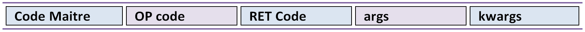
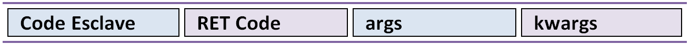

TCP Talks¶
TCPTalks est une librairie qui permet la communication entre deux terminales pythons.
Preambule¶
TCP Talks est une librairie utilisé pour faire la liaison entre les arduinos et un ordinateur. Il peux également être utilisé en local pour une utilisation interne à la raspberry.
Cette librairie utilise les librairie socket et pickle , l’un pour la communication et l’autre pour la serialisation.
Cette librairie est capable de transférer n’importe quelles données, et même des objects si le destinataire en possède l’architecture.
TCPTalks pour fonctionner à besoin d’une partie client et d’une partie serveur. Cette differenciation est peu importante pour l’utilisation car les deux roles possèdents les même fonctionalités.
Les packets de données sont comme celle de SerialTalks c’est a dire standardisés pour une meilleur utilisation. Il existe des packets maitre et esclave. Les packets maitres sont destiné à lancer une methode chez le destinataire, alors que les messages esclaves sont destinés à se retrouver dans les listes de données reçu et ne peux donc rien déclancher.
Voici un shema récapitulant la structure des packets transités par cette librairie :
Message maitre :
Message esclave :
- Master Code:
- Le Master code permet de faire la difference entre un packet esclave et maitre. Il vaut soit
b'R'(maitre) soitb'A'(esclave).
- OP Code
- L’Op code est très important puisqu’il permet d’explicité la requette. On associe pour chaque requette à executer un Op code. L’Op code n’est pas nessaire pour le message esclave car seul le retcode est utilisé pour identifié à quel requette ce message repond.
- RET Code
- Le RET code est utile pour les retours d’instructions. En effet si le destinataire a besoin de renvoyé des informations au programme python. il va utilisé ce code dans le packet retour pour permettre au programme python de bien associé avec quel requette ces informations sont reliés.
- args et kwargs:
- Une requette peux avoir une infinité d’arguments suplémentaire du moment que la taille n’est pas trop excessif.
Note
Il n’y a pas de TCPUtils car c’est la librairie pickle qui permet la serialisation et la deserialisation.
API¶
La librairie contient deux objects, TCPTalks et TCPListener. TCPTalks est utile pour lancer les requettes tandis que TCPListener s’occupe de recevoir et traités les messages. Il est donc important de ne pas touché a ce dernier.
-
class
TCPTalks¶ -
__init__(ip=None, port=25565, password=None)¶ Paramètres: - ip – Permet de choisir de se connecter à un ip ou de se lancé en tant que serveur si égal à None.
- port (int) – Indiquez le port à utilisé pour les communications avec ce TCPtalks. Il est possible de lancer plusieurs TCPTalks du moment que chaqu’un à un port different.
- password – Indiquez le mot de passe a utiliser.
Note
Pour se connecter à un server sur le même ordinateur utilisez l’IP
127.0.0.1
-
__enter__()¶ Methode pour l’utilisation de
withReturn TCPTalks: Retourne l’object de communication connecté.
-
__exit__(exc_type, exc_value, traceback)¶ Methode pour l’utilisation de
withParamètres: - exc_type – type de l’erreur
- exc_value – argument d’erreur
- traceback – trace de l’erreur
-
connect(timeout=5)¶ Lance la connexion du socket avec les renseignements données au constructeur
__init__.Paramètres: timeout – Timeout à utiliser pour la conexion du socket.
Lève: - AlreadyConnectedError – Dans le cas ou le socket est déjà connecté.
- ForeverAloneError – Dans le cas ou la connexion ne peux s’établir faute de réponse de la part du binome.
- AuthentificationError – Dans le cas d’un mot de passe faux
-
disconnect()¶ Coupe les communications, le socket et le thread TCPListener.
-
bind(opcode, instruction): Bind permet d’associé un Opcode et une fonction ou methode. La cible (instruction) sera executé a chaque fois que l’Op code est recu. La methode selectionner peux renvoyer n’importe quels arguments, il sera automatiquement transmit à l’éméteur de la requette.
Paramètres: - opcode – Opcode à utiliser pour la requette
- instruction – Adresse de la fonction a utiliser pour le bind.
Lève: KeyError – Dans le cas ou l’OpCode est déjà utilisé.
Note
Pour donner l’adresse d’une méthode, il suffit d’Indiquer son nom. Exemple
print.
-
send(opcode, *args, **kwargs)¶ Permet l’envoie d’une requette sans récupérer directement la réponse du binome. Il est recommandé d’utiliser cette methode pour les requettes sans retours, mais permet dans le cas contraire de récupérer la reponse plus tard grace au retcode retourné.
Paramètres: - opcode – Code a utilisé pour identifier la requette
- args – Arguments suplémentaire à transmettre.
- kwargs – Arguments suplémentaire à transmettre només.
Retourne: Le retcode à utilisé pour la reception de retour éventuel.
Lève: NotConnectedError – Levé si le socket n’est pas connecté.
-
execute(opcode, *args, timeout=5, **kwargs)¶ Execute permet l’envoie d’une requette et retourne directement le resultat de celle-ci. Il est recommandé de l’utilisé si votre requette attend un retour de la part du binome
Paramètres: - opcode – OPCode a utlisé pour la requette.
- args – Arguments à envoyer pour la bonne execution de la requette.
- timeout – Timeout à utiliser pour la reception du resultat de la requette.
- kwargs – Arguments nommés à envoyer pour la bonne execution de la requette.
-
get_queue(retcode)¶ get_queue permet de récuperer la Queue qui est associé au retcode indiqué. Peut importe si elle est vide ou non.
Paramètres: retcode – Code de la Queue à retourner. Retourne: Retourne la Queue qui est associé au retcode indiqué.
-
delete_queue(retcode)¶ Methode pour la suppression de la Queue associé au retcode indiqué. Dans la conception cette methode consiste à supprimer les données de la Queue uniquement.
Paramètres: retcode – Code de la Queue à supprimer.
Avertissement
Ces methodes sont destiées à une utilisation interne, il est peu recommandé de les utiliser.
-
sendback(retcode, *args)¶ Methode destinée à une utilisation interne. Permet l’envoie du message esclave avec les arguments et le retcode associé à la reponse. Il est possible de définir soit même son retcode mais très peu pratique pour le retrouver chez le binome sans configuration au préalable.
Paramètres: args – Arguments a transmettre dans le message esclave.
-
process(message)¶ Permet de traités le message reçu. C’est à dire identifier quel type de message (esclave ou maitre) .
Paramètres: message – Message en Tuples recu.
-
execinstruction(opcode, retcode, *args, **kwargs)¶ Cette methode lance l’execution de la fonction associé à l’OPCode et renvoie ce que la fonction retourne après son execution.
Paramètres: - opcode – Opcode de la requette a traiter.
- retcode – RetCode de la requette en cours de traitement.
- args – Arguments à transmettre à la methode lancée.
- kwargs – Arguments nommés à transmettre à la methode lancée.
-
rawsend(rawbytes)¶ Methode permettant l’envoie direct de bytes au binome.
Paramètres: rawbytes – Données à transmettre. Lève: NotConnectedError – Levé si le socket n’est pas connecté.
-
_serversocket(port, timeout)¶ Methode privée pour la connexion du socket en tant que serveur.
Paramètres: - port – Port à utiliser pour le lancement du serveur.
- timeout – Timeout à utiliser pour la connexion.
Retourne: Retourne un object socket utilisable pour la connexion.
-
_clientsocket(ip, port, timeout)¶ Methode privée pour la connexion à un serveur avec l’ip et le port.
Paramètres: - ip – Ip du serveur à connecter.
- port – Port à utiliser pour la connexion.
- timeout – Timeout utilisé pour la connexion au serveur.
-
_loads(rawbytes)¶ Methode qui permet d’isolé le premier message du rawbytes, ou renvoie une erreure si le rawbytes n’est constitué que d’un message incomplet.
Lève: - pickle.UnpicklingError – Levée si le rawbytes n’est constitué que d’un message incomplet.
- AttributeError – Levée si le rawbytes n’est constitué que d’un message incomplet.
- EOFError – Levée si le rawbytes n’est constitué que d’un message incomplet.
-
..class:: TCPListener(Thread)
Utilisation¶
Il faut bien comprendre que dans cette librairie la connexion n’est pas exactement symetrique. Puisque qu’il faut choisir qui sera le serveur et qui sera le client. Il est donc important de bien choisir les rôles pour une bonne utilisation.
Dans ce petit guide je vous montrerai une utilisation basique de la librairie avec quelques astuces.
Pour etablir une connexion il suffit d’écrire les lignes suivantes.
Note
Il est possible d’utiliser cette librairie en interne avec l’IP 127.0.0.1.
Côté client :
from TCPTalks import *
#creation du TCPTalks
tcplink = TCPTalks("127.0.0.1",1000)
#Connexion au client
tcplink.connect()
Côté serveur:
from TCPTalks import *
#creation du TCPTalks
tcplink = TCPTalks(port=1000)
#Connexion au serveur
tcplink.connect()
Une fois la connexion faite, il n’y a plus de difference dans le fonctionnement de la lib entre serveur et client.
La prochaine étape est d’affecter des methodes ou fonctions à un opcode pour pouvoir repondre à des requettes.
tcplink.bind(0xFF,``fonction``)
Pour la realisation de fonction utilisable par la librairie, il n’y a pas beaucoup de contrainte, puisque le TCPtalks va remplir tous les champs de la fonction avec les données reçu. Si il manque des arguments dans la requettes la librairie lèvera une erreur chez l’emetteur de cette requette.
Pour retourner des arguments il suffit de les mettres dans le return de la methode. Il est possible d’avoir plusieurs return différents avec un nombre d’arguments differents.
Exemple :
def fonction(texte):
print(texte)
return ("Bien reçu",10)
Dans cette exemple, la fonction va quand elle sera apellé par TCPTalks afficher le paramètre recu dans la requette avec l’OPCode qui était associé à cette fonction. Elle va ensuite renvoyer deux variables, un texte et un entier. Cette exemple reste très basique mais ilustre bien le peut de contraite qu’impose TCPTalks.
Il ne reste plus qu’à lancer l’instruction que nous venons de creer. Pour finir ce petit tutoriel, je vais montrer les deux methodes pour une parfaite execution de la commande. La première methode qui est la plus simple quand il faut apeller une requette qui attend un retour comme avec la fonctionb que nous avons creer juste au dessus.
tcplink.execute(0xFF,"tu me reçois ?")
#Cette ligne va naturelement renvoyer le tuple ("Bien reçu",10)
La deuxième methode moins recommandée (pour des raisons de gestion d’erreur à distance) consiste à utiliser les deux methodes send et poll.
#envoie de la requette
retcode = tcplink.send(0xFF,("tu me reçois?")
#reception du rendu de la requette
tcplink.poll(retcode)
#Cette ligne affiche naturelement le tuple ("Bien reçu",10).